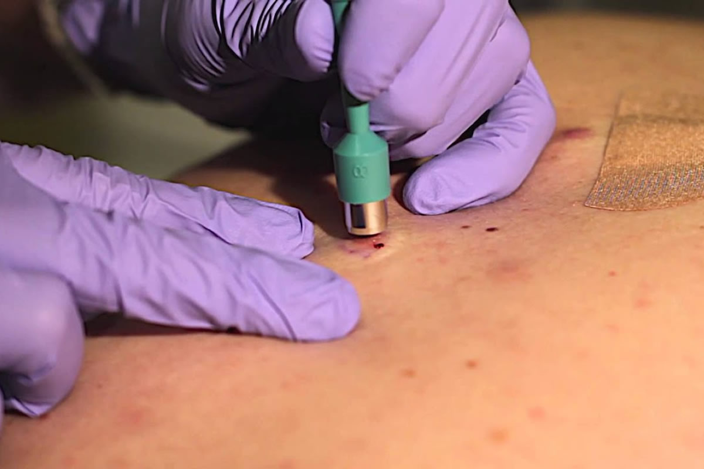

Skin Biopsy is a biopsy technique in which a skin lesion removed to be sent to a pathologist render a microscopic diagnosis. It is usually done under local anesthetic in a physician’s office, and results are often available in 4 to 10 days. It is commonly performed by dermatologists. Skin biopsies are also done by family physicians, internists, surgeons, and other specialties. However, performed incorrectly, and without appropriate clinical information, a pathologist’s interpretation of a skin biopsy can be severely limited, and therefore doctors and patients may forgo traditional biopsy techniques and instead choose Moh’s surgery. There are four main types of skin biopsies: shave biopsy, punch biopsy, excisional biopsy, and incisional biopsy. The choice of the different skin biopsies is dependent on the suspected diagnosis of the skin lesion. Like most biopsies, patient consent and anesthesia (usually lidocaine injected into the skin) are prerequisites.
